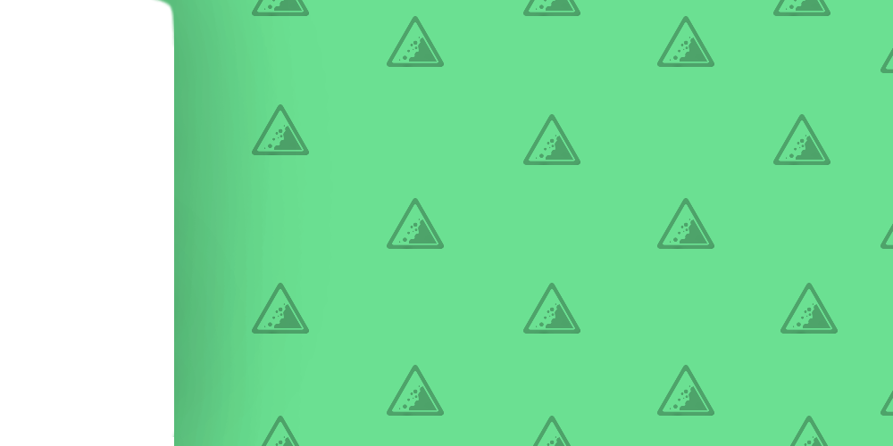

g
ÍNDICE
Características
Causas
Áreas geográficas mais suscetíveis
Consequências
Medidas
de autoproteção/prevenção
Notícias recentes
Início
Trabalho realizado por:
Pedro Antunes nº14
Rúben Ferreira nº16
Sofia Barros nº20